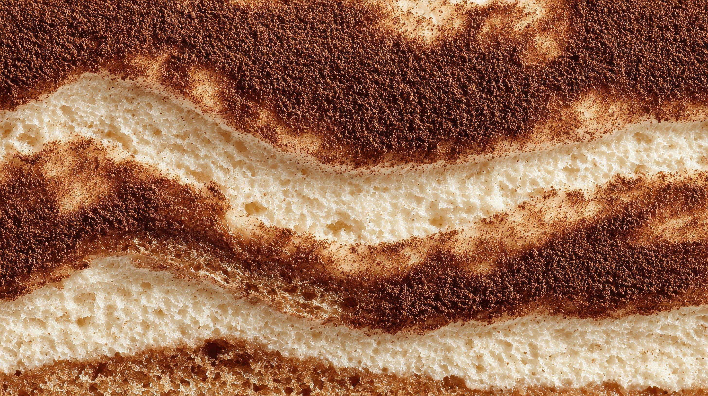

Tiramisu
Tiramisu is a classic Italian dessert that layers delicate ladyfinger biscuits soaked in rich espresso with a smooth, airy cream made from mascarpone cheese, eggs, and sugar, all finished with a dusting of cocoa powder. Its name means “pick me up,” a nod to the energizing combination of coffee and cocoa, and each bite balances bitterness, sweetness, and creaminess in a way that feels both indulgent and light. Elegant yet comforting, tiramisu is beloved for its simple ingredients, no-bake ease, and the way its flavors deepen as it rests, making it a timeless favorite on dessert menus around the world.
Ingredients
- 2 cups mascarpone, (500g)
- 2 cups mascarpone, (500g)
- cup strong brewed coffee, (230ml)
- 3 tablespoons dark chocolate, grated
- 4 egg yolks, at room temperature
- 3 egg whites, at room temperature
- 6 tablespoons sugar
- tablespoons coffee liqueur, (optional)
- 1 tablespoon cocoa powder
Instructions
- Carefully separate the egg yolks and whites into two separate bowls. Add 3 tablespoons of sugar to the egg yolks and whisk them with an electric whisk until pale and thick. Add the mascarpone and whisk again until smooth and creamy, set aside.
- Clean your beaters thoroughly. This is very important as egg whites will not whip if any egg yolk is added.
- Using a clean electric whisk start to whisk the egg whites. When they become frothy, add 3 tablespoons of sugar and whisk until the egg whites are stiff and glossy. You should be able to turn the bowl upside down and they remain stiff (be careful not to overwhip them).
- Next, add one third of the whisked egg whites to the mascarpone and egg yolk mixture and gently fold it in as you would with a cake batter. Continue with the remaining whites a third at a time until it's completed incorporated.
- Mix the espresso and 4 tbsp coffee liqueur in a shallow bowl and dip in the lady fingers (savoiardi biscuits). You want to dip them into the liquid quickly (around 2-3 seconds) whilst turning to soak each side.
- Lay the ladyfingers in a glass or ceramic dish until you have one even layer. You can brake some biscuits to fit your dish .
- Next, add half of the mascarpone mixture over the biscuits and spread out in an even layer, top with some grated dark chocolate.